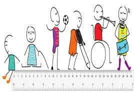

Objetivos
Objetivo: Ordenar fracciones utilizando los símbolos matemáticos (=, <, >) y material concreto.
Objetivo: Ordenar fracciones utilizando los símbolos matemáticos (=, <, >) y material concreto.
DCD a desarrollar: M.3.1.38. Establecer relaciones de orden entre fracciones, utilizando material concreto, y simbología matemática. (=, <, >).
Tiempo: 40 minutos aproximadamente.
Materiales:
Descripción de la actividad
Para esta actividad, primero se debe realizar varias cartas de un tamaño aproximado de 10 cm x 10 cm. En cada carta se deberá ubicar una fracción representada de forma gráfica o algorítmica. Al otro lado de la carta, los niños podrán decorarla con dibujos que ellos quieran. Una vez que se tenga un mínimo de 30 cartas, se procederá a realizar la actividad. Las cartas serán ubicadas boca abajo en una mesa, cada alumno se acercará a la mesa y escogerá dos cartas. El estudiante tendrá que mencionar si la primera tarjeta que escogió es mayor, menor o igual a la segunda carta que escogió. Si el estudiante acierta, podrá llevarse las cartas y si responde de manera incorrecta, deberá devolver las cartas. El estudiante que al final tenga más cartas será quien sea el ganador del juego.

-Propiciar instrucciones claras y precisas, y si es necesario usando imágenes.
-Se puede reducir o disminuir el número de cartas dependiendo de las habilidades de los alumnos.
-Realizar retroalimentación positiva.
-Si hay dificultades visuales ayudar mencionado la fracción representada en las cartas.

Obra publicada con Licencia Creative Commons Reconocimiento No comercial Compartir igual 3.0